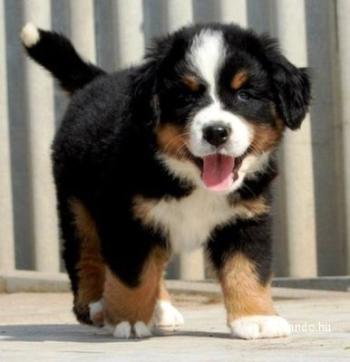

Dogs are the humans best friends
The dog is a member of the genus Canis, which forms part of the wolf-like canids, and is the most widely abundant terrestrial carnivore
Fun facts about dogs
- A dog's sense of smell is 10,000 times stronger than a human's
- The Norwegian Lundehund is the only dog with six toes on each foot
- Dogs can get jealous when their humans display affection toward someone or something else
- Dogs can be trained to detect cancer and other diseases in humans.
My favourte dog types
- Golden retriever
- Dachshund
- Bernese mountain dog

A dog is the only thing on earth that loves you more than you love yourself.